Catálogo de turismo en colombia
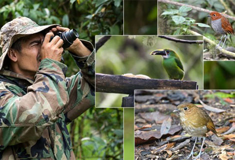
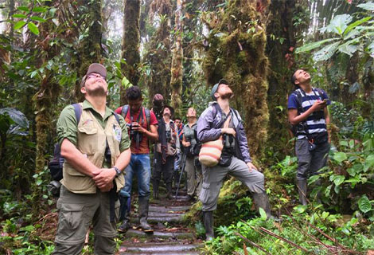
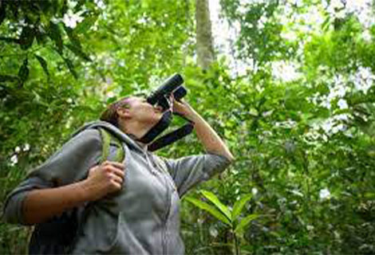
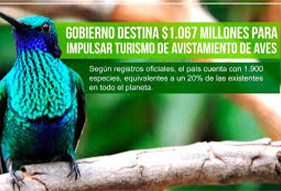
Desierto de la Tatacoa, Huila Colombia
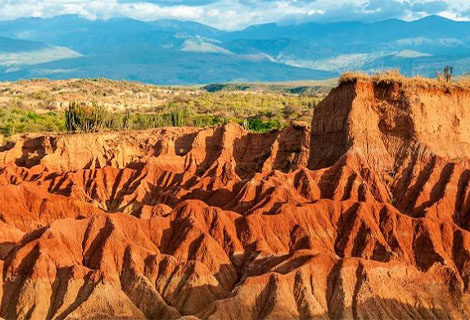
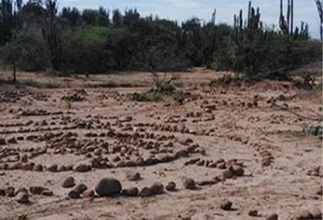
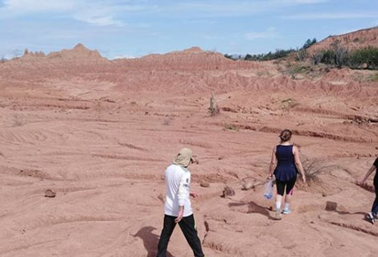
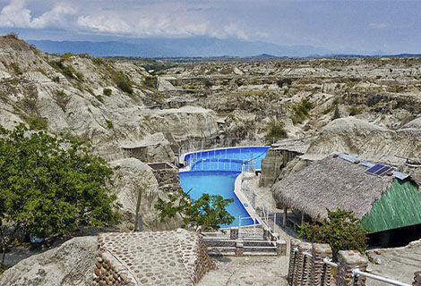
Parque Arqueológico de San Agustín Huila
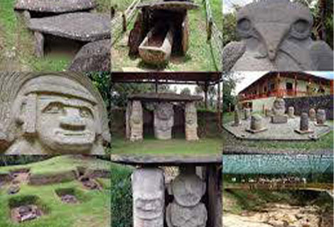
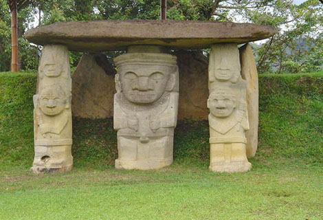
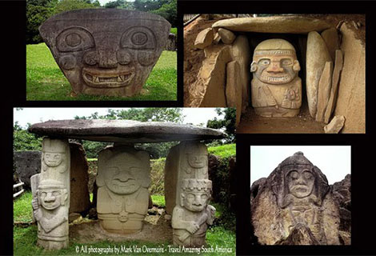
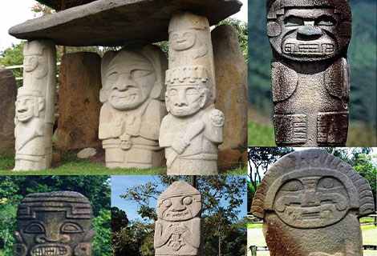
San Juan de Villalobos de Santa Rosa Cauca.
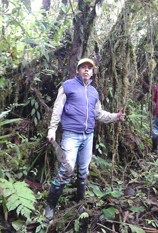
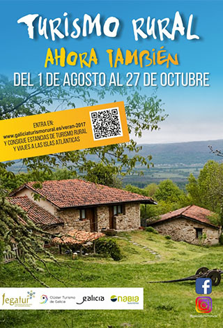
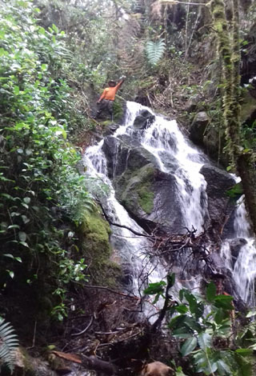
El descenso de ríos o balsismo (rafting y kayak )
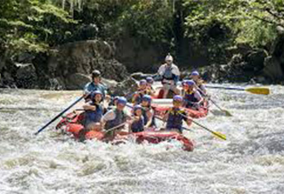
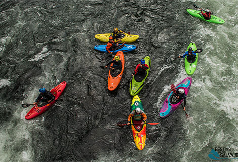
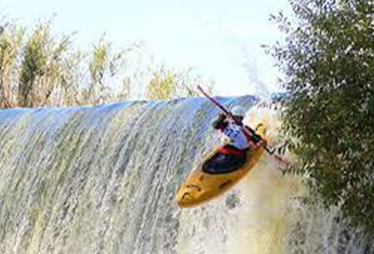
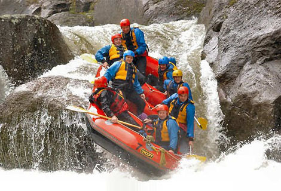
Caminata ecológica
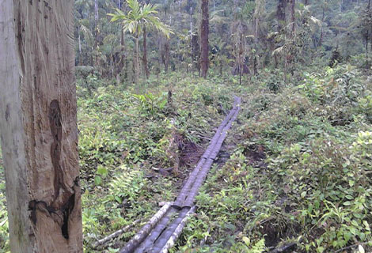
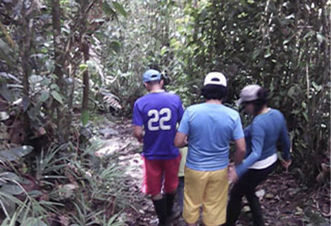
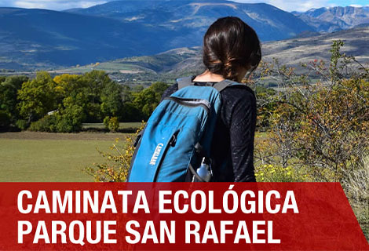
sitio de turismo en colombia
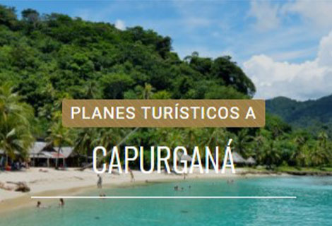
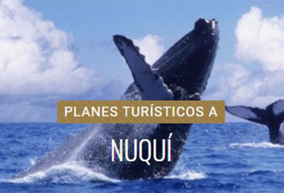
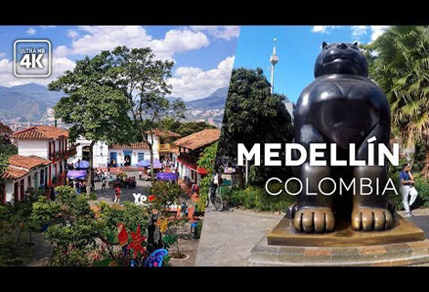
Torrentismo: el desafío de iniciarse en una nueva aventura
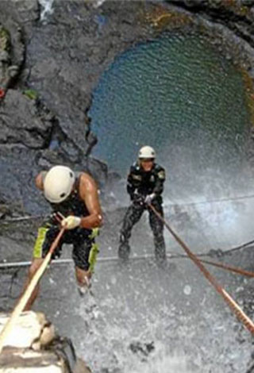
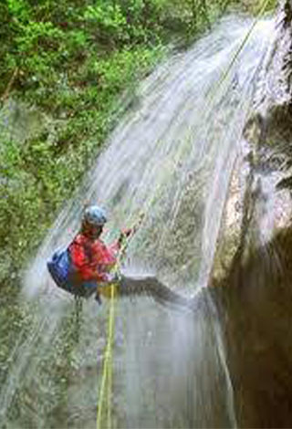
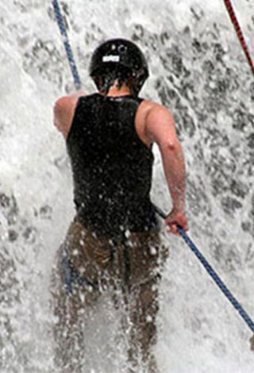
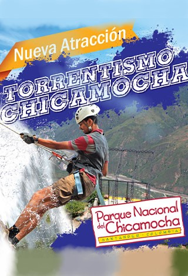